Installation
You can copy the following line to your Julia REPL to install the latest stable version of this package:
pkg> add BloqadeLow-Latency Usage of Bloqade Component Packages
The Bloqade project contains multiple packages. For development on top of functionality, (especially for those who do not need the ODE solvers), we recommend you use the corresponding component packages. The following is a list of component packages and what they do (WIP = work-in-progress)
- BloqadeExpr: Expressions and API definitions for Bloqade.
- BloqadeKrylov: Krylov-subspace based emulation.
- BloqadeLattices: objects, functions for lattices.
- BloqadeMIS: tools for working with maximum-independent sets in Rydberg system.
- BloqadeODE: ODE-based emulation.
- BloqadePython: WIP, python wrapper for the Bloqade package.
- BloqadeQMC: WIP, Stochastic Series Expansion for Rydberg system.
- BloqadeSchema: WIP, the schema for creating a task for Bloqade and QuEra machine.
- BloqadeWaveforms: the waveform objects.
- YaoSubspaceArrayReg: register object and functions in a subspace.
All the non-WIP packages are registered in the General registry. Thus, you can add them as your dependency by directly running pkg> add <component package> in your Julia REPL.
Try the Latest Version of Bloqade
Some users may want to try the latest version of Bloqade for bug fixes, new features, etc. One can use git to clone the repo to try the latest version of the entire package. This requires one to setup the local project environment via dev. Please refer to the page Contributing to Bloqade for more information.
If you only want to try the latest version of a specific Bloqade package, just add #master after the package name, e.g.:
pkg> add BloqadeExpr#masterUsing Bloqade with AWS EC2
Bloqade can be deployed on any personal computer although some users might benefit from the extra performance offered by large computational resources from different providers. To address that, Bloqade is also available on the Amazon Web Services (AWS) Marketplace, and can run on AWS EC2 instances Amazon Machine Images (AMIs). More information about the AMIs and how to deploy them onto EC2 instances can be found below.
Bloqade AMIs
There are two AMIs offered by the Bloqade team:
Bloqade AMI (Base Image)
Built on top of Ubuntu Server 20.04 LTS, this image includes
- The latest version of Julia and Bloqade
- Yao.jl
- Revise.jl
- BenchmarkTools.jl
- PythonCall.jl
- Conda package manager, provided by Miniconda
Bloqade CUDA AMI
Built on top of an Amazon DLAMI (Deep Learning AMI) on Ubuntu 20.04, this AMI includes everything from the Base Image above along with:
- NVIDIA CUDA
- cuDNN
- NCCL
- GPU Drivers
- Intel MKL-DNN
- Docker
- NVIDIA-Docker
- EFA support
- Support for Block devices
as well as:
Both of which are needed for Bloqade to take advantage of GPUs (see GPU Acceleration for more on how to do this).
AMI IDs
The Bloqade AMIs have a unique AMI ID associated to them that can be used to make searching for them easier (you can copy-paste the AMI ID when searching through the AMI Catalog) or using them through the AWS CLI. The ID is different for each AWS Region but they can be found in the tables below.
Bloqade AMI IDs
| Region | AMI ID |
|---|---|
| us-east-1 (N. Virginia) | ami-074e8de45222c5a18 |
| us-east-2 (Ohio) | ami-0adaacf743f9d4403 |
| us-west-1 (N. California) | ami-0c09dc87d9e3ba27f |
| us-west-2 (Oregon) | ami-015d1d8fe1b192bf7 |
Bloqade CUDA AMI IDs
| Region | AMI ID |
|---|---|
| us-east-1 (N. Virginia) | ami-06256cea24309bc97 |
| us-east-2 (Ohio) | ami-061ab718ef97e1a40 |
| us-west-1 (N. California) | ami-0cfee0c8087406f9c |
| us-west-2 (Oregon) | ami-0da625a7c14b50724 |
Disclaimers
- Deploying Bloqade on AWS EC2 instances will incur a cost on the user that will depend on the AWS resources utilized.
- Support on deploying Bloqade on AWS can be obtained via AWS Support. This is a one-on-one support channel that is staffed 24x7x365 with experienced support engineers. To learn more, follow this link.
Step 0: Set Your AWS Region
For general guidelines on launching EC2 instances, check out the AWS EC2 tutorial. Bloqade can technically be run from any location but its images are hosted on servers in AWS' North Virginia (N. Virginia) region. To get started as easily as possible, set your AWS region location to N. Virginia (us-east-1).
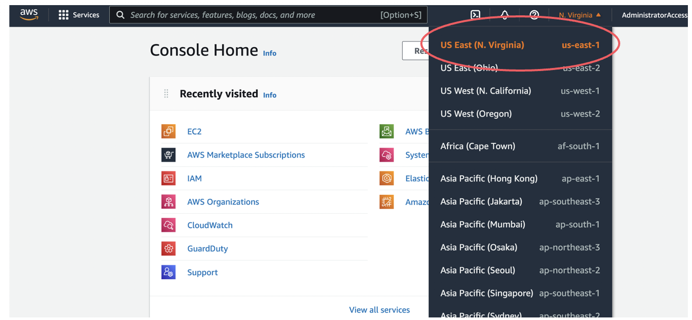
Step 1: Access the EC2 Service
Now to really get started. On your AWS account portal, type EC2 on the search bar and access the EC2 Service
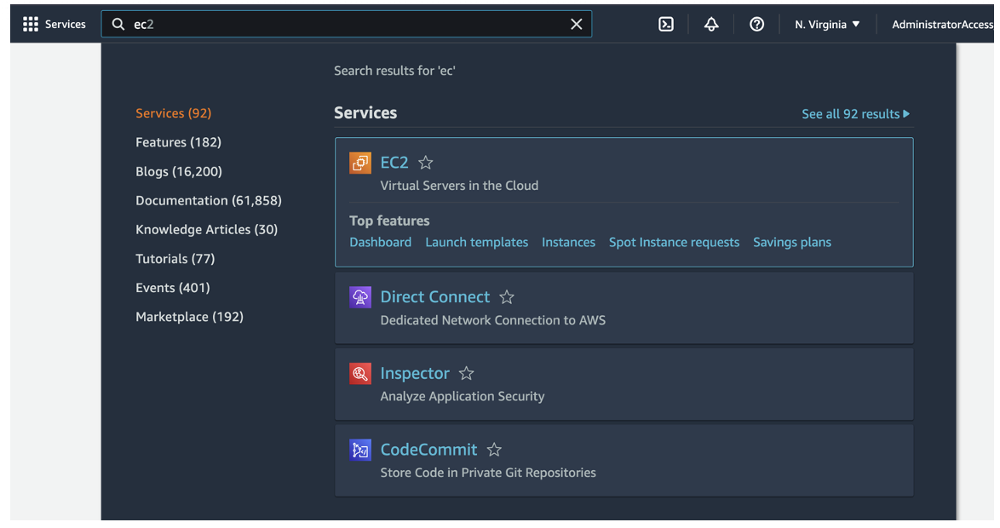
Step 2: Launch Your Instance
Find the "Launch Instance" button, circled in red, to create one. To see all currently running instances, click the "Instances (running)" button, indicated by the red arrow.

Step 3: Name Your Instance
Give your instance a memorable name...
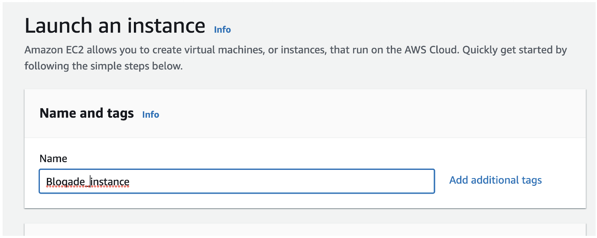
Step 4: Choose an Image
...and choose Bloqade as an image. This will put the AMI on the instance which has Bloqade and all its dependencies ready to go. Take a look at the Bloqade AMIs section of this page for more information on available images.
To find the Bloqade image you can search for it by typing in "Bloqade" or one of the AMI IDs in the prior section in the search bar:
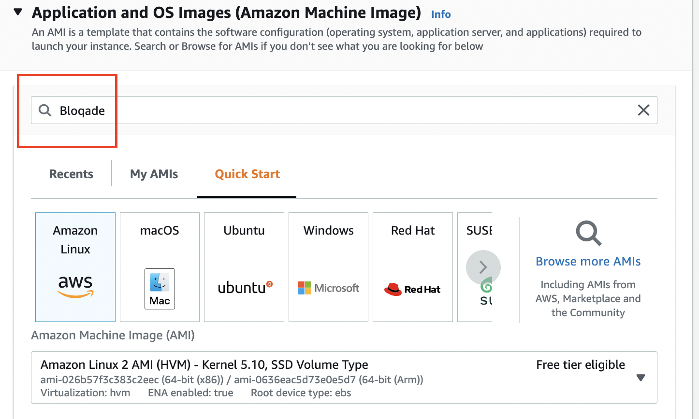
Upon hitting enter, ensure you're in the "AWS Marketplace AMIs" section and select which image you'd like to use:
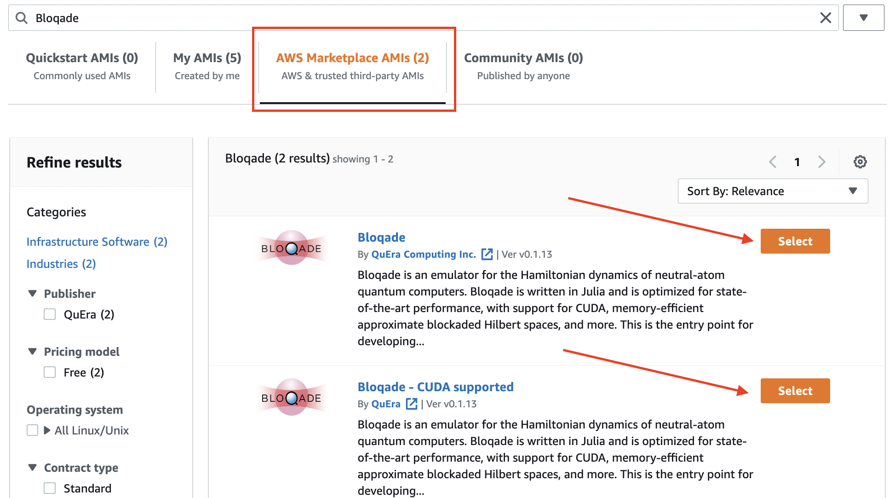
Upon reviewing the information on the AMI and hitting "Continue" you'll be returned to the Instance page to continue customizing it.
Step 5: Select Your Instance
Select the EC2 instance type. Note that the rate at which your charged is dependent on which instance you select. Those with larger RAM/power usually charge more. For simple usage, we recommend an m2.xlarge instance as a basic choice. If you are looking for GPU support consider the g4dn.xlarge instance as a starting point.
More information on available instances and the ability to compare between them you can visit instances.vantage.sh.
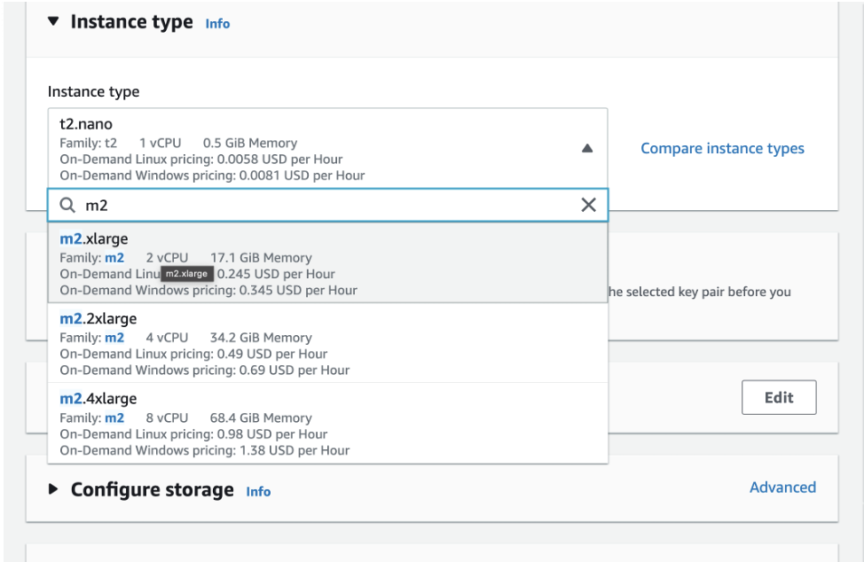
Step 6: Generate a Key Pair
In order to access your instance from your local machine's terminal you will need to generate a key pair in advance. Click on "Create new key pair" as circled in the image.
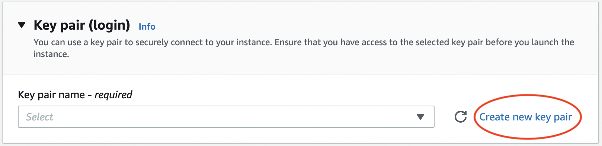
Give your key pair a memorable name and once you have selected your desirable key pair type and file format click "Create key pair".
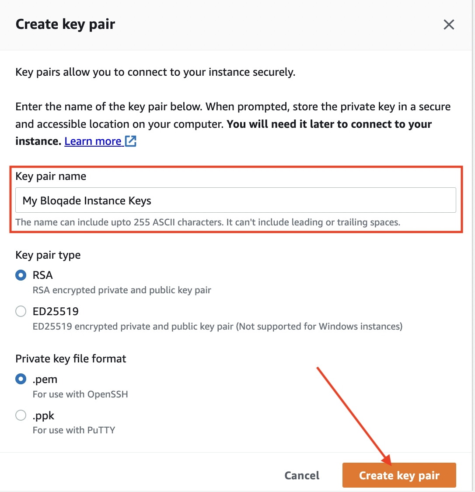
A download should happen in your browser that gives you your private key. If you are a PuTTY user you will need to import this key into your client. If you are are a Linux/macOS user using an SSH client from the terminal, you should put the key in your ~/.ssh folder although any other location will work with the caveat being you will have to specify the exact path to the key when invoking ssh as an argument to the command.
You will also need to run the following command to set the proper permissions on the private key:
chmod 400 </path/to/your_key>After launching your instance there will be two ways you can connect to it, shown in the later steps of this guide.
Step 7: Tune Your Instance Some More
Select your security group. This depends on either your personal setup, company security practices, or AWS best practices.
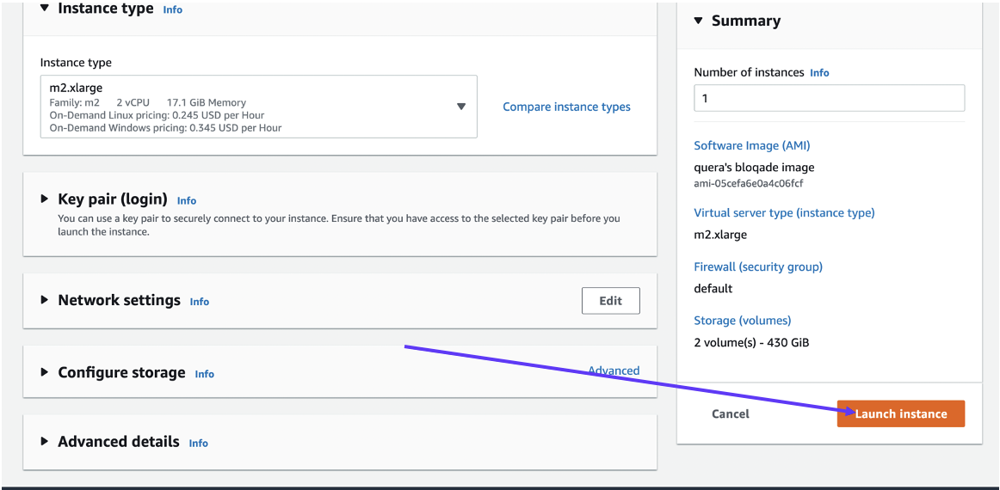
Step 8: Blast Off!
Launch your instance!
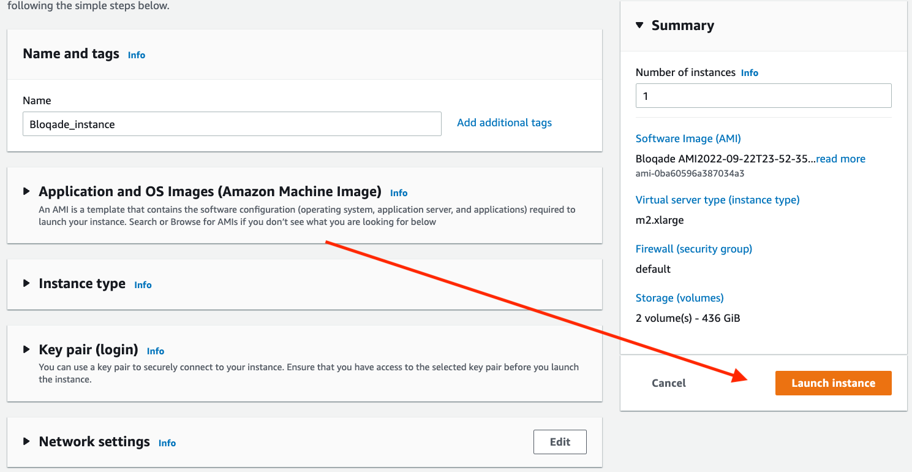
You should be presented with the following screen:
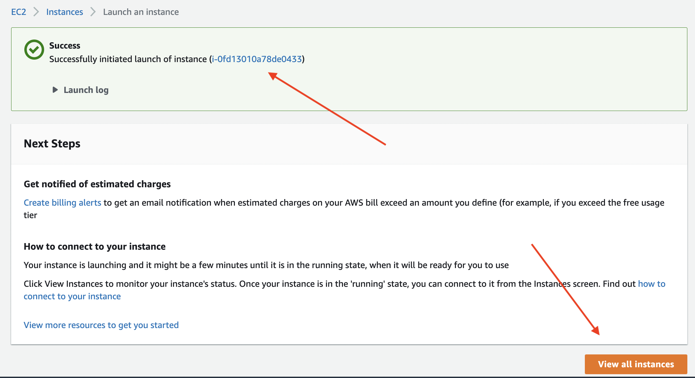
If you click on the instance hyperlink or the "View all instances" button, you'll be brought to the Instances page which shows all currently running as well as previously terminated/stopped instances. This page is also accessible from EC2 service page, accessible via the directions in Step 2.
Select your instance from the "Instances" menu by clicking the checkbox next to the desired instance. A "Connect" button should be clickable in the upper right corner.
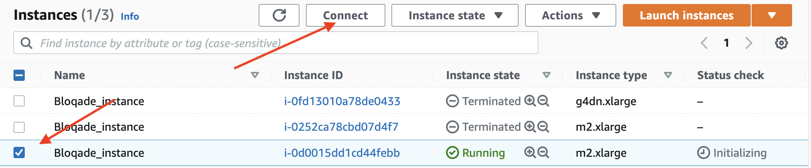
This should bring you to a "Connect to instance" page where you can navigate to the "SSH client" section.
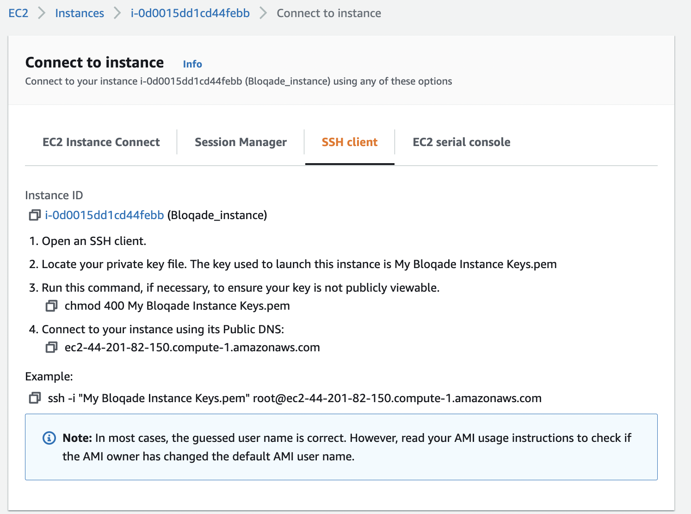
From here you have one of two choices to connect with your instance:
When logging in to your EC2 instance, the recommended user to login as is the ubuntu user (the default, non-root user from the Ubuntu base images the Bloqade AMIs are based off of). Using root is not advised and unsupported by the Bloqade team. You will notice the "SSH Client" section in the photo above still gives the ssh -i ... command with "root" as the username. This must be changed to ubuntu IF you intended to use Option 1 below. Option 2 already accounts for this.
Option 1: Instant Command Line Access
If you just want to connect to the instance as fast as possible and plan on either:
- Keeping the instance alive for the duration of your work
- Terminating (the equivalent of completely deleting an instance) and starting new instances frequently
Just copy and paste the example at the very bottom (the command starting with ssh -i ...), changing the user to ubuntu from root. If your key is not located in the ~/.ssh folder for Linux/macOS users, you will need to either navigate to the folder you have the key stored to in the command line and execute the command there OR specify the full path to the key as the string in front of -i.
Option 2: OpenSSH Config File
If you plan on reusing the same instance (stopping and starting it, thereby preserving your work on the EBS (Elastic Block Storage), essentially the hard drive of your instance) instance that the EC2 instance uses by default, you can set defaults for signing in by creating (if the file does not exist)/editing (if the file does exist) your OpenSSH config found in your ~/.ssh folder. Just add the following using vim or your favorite text editor:
Host AWS
HostName <DNS NAME, ex: ec2-3-93-200-58.compute-1.amazonaws.com>
User ubuntu
IdentityFile ~/.ssh/<PATH TO YOUR KEY>.pemYou can find your DNS name by following the steps mentioned in Option 1 but focusing on Step 4, which is "Connect to your instance using its Public DNS".
Upon saving the changes, you should be able to access your instance by running ssh AWS in your command line.
Step 9: Shutting Down Your Instance
In order to shut down your instance, you can return to the "Instances" menu shown in Step 8, select your instance, and click the "Instance State" Drop down.
You can either:
Stop your Instance - This preserves any files you may have created working in the instance that were on the EBS but will come at a cost, determinable here. You may reuse the instance by selecting it again in the "Instances" menu and selecting "Start".
Terminating your Instance - This does NOT preserve any files and means you will lose any work not transferred off the instance to your local machine. Termination deletes the EBS instance that your instance uses and you will not be charged afterwards for storage.
Build System Images to Accelerate Start-up Time
Since Bloqade is a large package, its loading time and time-to-first-simulation can be very long. You can build system images to save all the compilation results in a binary to accelerate its loading/compilation time. This is useful when you have lots of interactive programming needs with Bloqade.
To build a system image for your environment, please use the PackageCompiler or use the Julia VSCode plugin's build system image feature
Contributing to Bloqade
Please git clone this repository to a directory of your choice on your local machine and refer to Contributing to Bloqade to see how to set up your development environment for Bloqade.